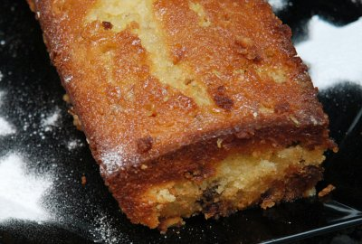

| Zutaten für eine 24 cm Cakeform: | |
| 50 g | Butter |
| 175 g | Rohzucker (für den Teig) |
| 75 g | Zucker (für den Guss) |
| 2 | Eier |
| 1 dl | Halbrahm |
| 2 | Orangen |
| 50 g | Schokolade |
| 25 g | Pinienkerne |
| 250 g | Mehl |
| 1 TL | Backpulver |
| 1 Prise | Salz |
Butter schaumig rühren.
Rohzucker, Zucker, Eier, Salz zugeben und zu einer luftigen Masse weiter rühren.
Abgeriebene Schale und Saft einer Orange sowie Pinienkerne und die grob gehackte Schokolade werden nun darunter gerührt.
Abwechslungsweise werden Rahm und das Mehl mit dem Backpulver untergezogen.
Die Masse in eine ausgebutterte Cakeform von 24 cm Länge füllen und bei guter Mittelhitze ca. 45 Minuten backen.
In der Zwischenzeit den Kristallzucker mit dem Saft einer Orange so gut rühren, bis er sich aufgelöst hat.
Den noch heissen Cake nach dem Backen einige Male einstechen, dann den Guss darüber leeren und in der Form auskühlen lassen.
Herbert Eigenmann, Code: ORC
Bewertung: Kam sehr gut. Die Schokolade ist nicht zu aufdringlich. RE, 20.4.2002
Am 6.8.2007 wurde es ein bisschen ein Desaster. Ich habe die kleine Cakeform verwendet und da wollte der Kuchen
nicht raus. Der Trick wäre mit Backtrennpapier dazwischen zu gehen. Auch geht der Rohrzucker in den Teig
und der Weisszucker in den Orangensaft. Der Cake schmeckt ganz passabel aber nicht sensationell. RE.